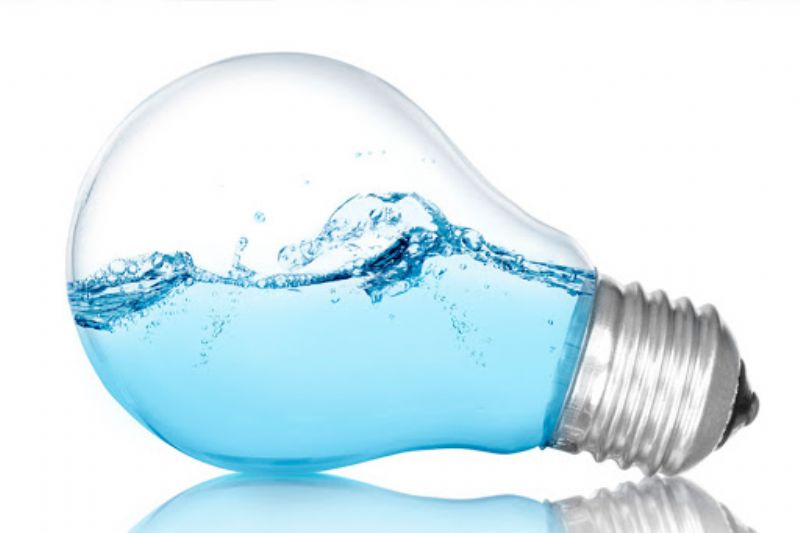
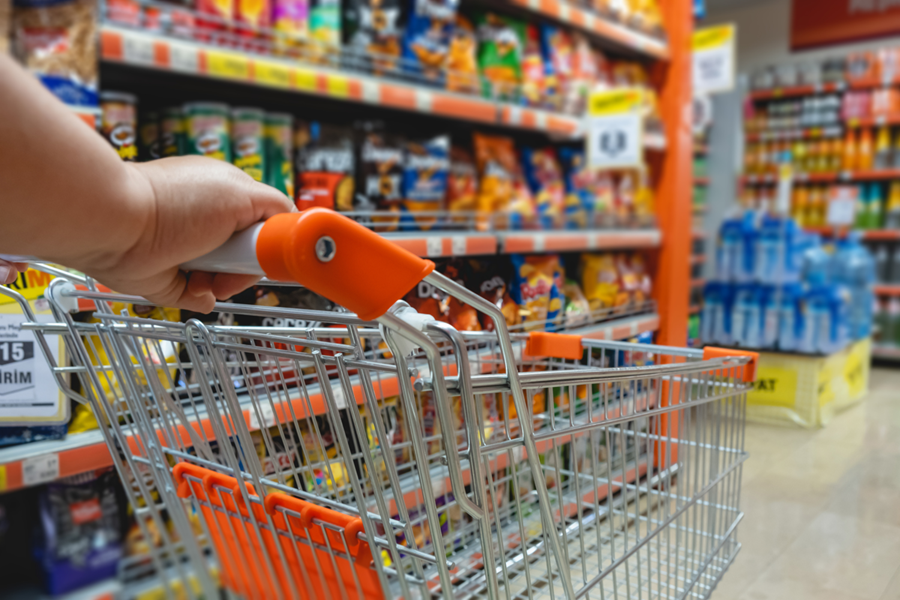
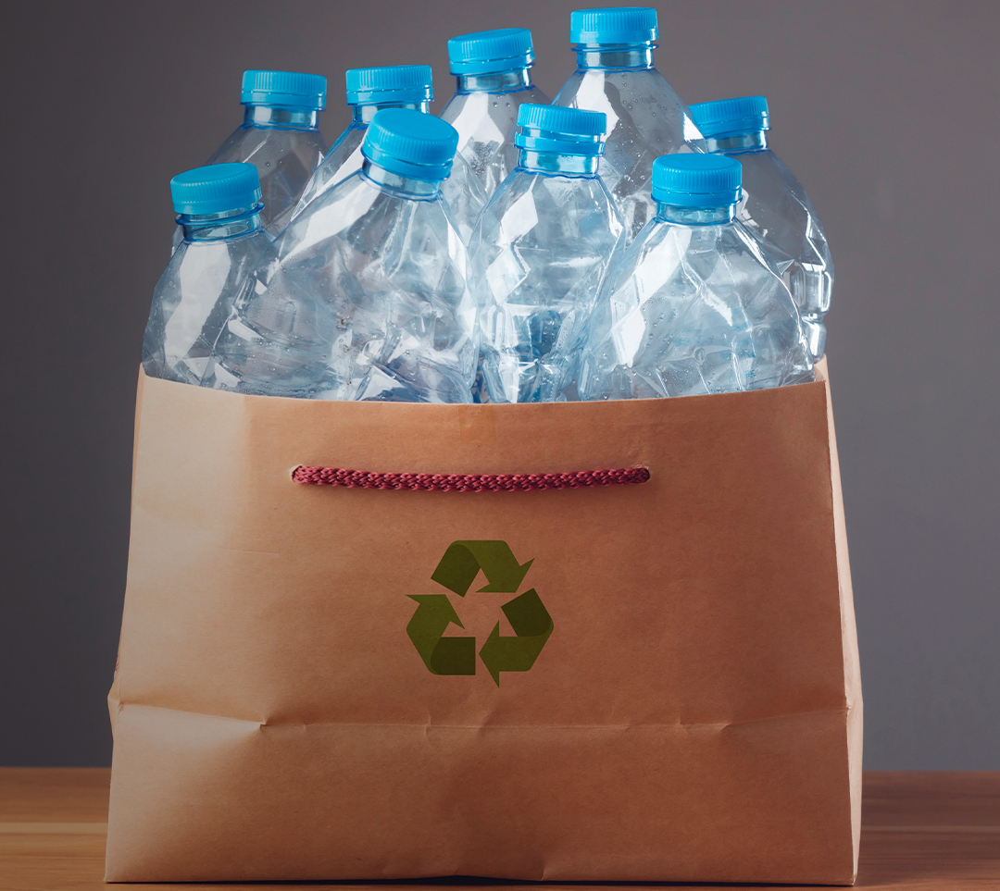
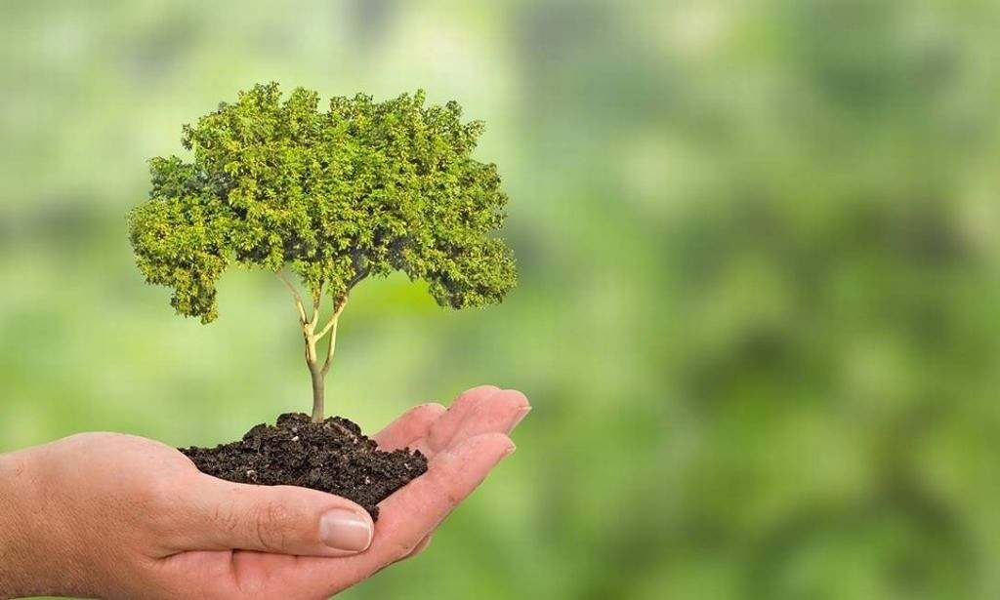
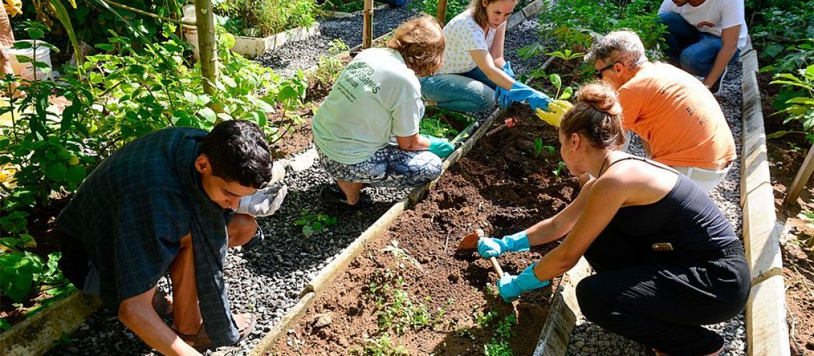

Atividades Individuais
Para as atividades individuais, estarei as indicando e dando uma breve explicação sobre, exemplos e ordenadas por ordem de dificuldade.
- Economize Água e Luz 
- Consuma e Escolha Conscientemente 
- Reduza a Utilização de Plásticos 
- Instrua Sobre Boas Práticas
- Plante Árvores e Plantas 
- Separe o Lixo Para Reciclagem
A economia de energia e água pode trazer benefícios para aquele que economiza e, ainda, ao meio ambiente. Este é um comportamento que pode ser adotado facilmente por qualquer pessoa, começando com coisas básicas, como por exemplo: fechar a torneira, desligar lampadas e eletrônicos em intervalos nos quais não sejam utilizados.
O consumo consciente pode ser definido como uma abordagem mais racional das compras. Pensamentos como "Devo comprar?", "Preciso disto?" são essenciais para uma economia por parte do indivíduo e também gerando econômia dos recursos naturais utilizados na fabricação do produto.
Já sobre escolha consciente, no contexto das compras sustentáveis, é definida como uma opção por produtos com características de produção sustentável e biodegradável.
O plástico está em todos os lugares e já é fato que além de prejudicar o meio ambiente, também prejudica a vida humana, sejam os microplásticos ou a presença de plásticos nas águas e solos.
Reduzir o uso de plástico pode ser por meio do uso de sácolas reutilizáveis, uso de garrafa de metal individual e sempre mantendo o comportamento de adotar um copo ou garrafa.
Esta atitude pode se tornar difícil por conta do costume e rigidez de determinadas pessoas em comportamentos específicos, portanto, é necessário encontrar pessoas que queiram e possam ser bem educadas.
Pode ser aplicada por meio de comentários que estimulem uma maior preocupação com o meio ambiente e outros sobre comportamentos que são maléficos e que podem ser evitados ou repensados.
Essa é, talvez, uma das principais formas de contribuir com o meio ambiente. Plantar uma árvore também é plantar vida e todos deveriam cultivar este comportamento.
Você pode plantar uma pequena árvore ou planta no seu quintal ou em uma área verde disponível para esta finalidade.

A separação do lixo é uma das primeiras práticas sustentáveis a nos serem apresentadas e, apesar de sua "dificuldade", pode ser muito útil para aqueles que querem levar a sustentabilidade a sério.
Outra opção seria separar o lixo doméstico em orgânicos e secos, sendo aqueles como restos de comida entre outros e estes como papéis, latas, vidros... facilitando deste modo a coleta seletiva por catadores e reduzindo a quantidade de lixo em aterros sanitários.
Atividades em Comunidade
- Faça Compostagem
- Crie uma Horta Comunitária 
- Crie um Grupo de Troca Comunitária

A compostagem é uma técnica de aproveitamento de diversos tipos de sobras de materiais orgânicos que, por meio de um processo de fermentação aeróbica, transformam-se em um adubo natural que é muito útil para hortas caseiras, plantas e árvores.
No contexto da atividade em grupo, seria adequada uma colaboração de pessoas para coletar as sobras orgânicas e realizar a compostagem, podendo o composto, ao final do processo, ser dividido e aproveitado pelos colaboradores e integrantes do processo, sendo assim, uma ótima ferramenta de integração, mas de qualquer forma, a compostagem também pode ser feita individualmente, trazendo os mesmos benefícios, porém com menor colaboração.
Horta comunitária é um espaço coletivo onde se pode produzir alimentos por meio do trabalho voluntário de pessoas que moram em determinada comunidade ou local.
Ela pode solucionar problemas ambientais e sanitários, podendo ser criada em terrenos abandonados ou locais sem uso específico, trazendo vida e propósito àquele local. Ela também contribui para a saúde e a consciencia ambiental das pessoas ao redor por não utilizar agrotóxicos e necessitar do cuidado com a natureza, também sendo uma ótima ferramenta para inserir crianças e jovens à temática ambiental.
Uma horta individual também é benéfica para o indivíduo e para o meio ambiente, também sendo uma ótima opção caso deseje melhorar a sua saúde e se conectar à natureza.

Um grupo de trocas pode ser bom para aproveitar objetos ainda úteis por meio de trocas ou até mesmo doações, evitando que haja acumulação ou descarte inadequado destes objetos e podendo resultar em queimadas que poderiam ser evitadas. É sempre bom repensar a utilidade de algum item, podendo trazer até mesmo lucro para aqueles que possuem muitos objetos acumulados e inutilizados.